The second-hand Subaru lineup on the Mile of Cars.
Certified pre-owned and standard used cars on offer at 2829 National City Blvd on the Mile of Cars. Since they're all on one lot, you can drive a used Outback against a CPO Forester in the same visit.
DALTON SUBARU NATIONAL CITY · PRE-OWNEDUsed and Subaru Certified Pre-Owned vehicles at Dalton Subaru National City on the National City Mile of Cars, serving San Diego County.
01From the pre-owned lot
Second-hand Subarus, on one lot.
A second-hand Subaru is a model that's had a prior owner. At Dalton Subaru National City, second hand splits into two categories, and you can compare both at our pre-owned lot.
Used Subaru: Any pre-owned Subaru. This is your lowest entry point into the lineup, with the widest spread of model years and mileage.
Subaru Certified Pre-Owned (CPO): A second-hand Subaru that meets Subaru of America's age and mileage standards, passes a 152-point inspection, and carries a manufacturer-backed warranty.
Both are on offer at the same address. Used Car Manager Juan Reynoso and the sales team can line a budget-friendly used model up next to a CPO equivalent so you see and make a real comparison.
A ten-minute comparison, not a weekend
Last month, when a Chula Vista shopper came in torn between a higher-mileage used 2020 Outback and a CPO 2021 with 22,000 fewer miles, we parked them side by side on the lot, pulled both window stickers and both vehicle history reports, and ran the math out loud: the CPO premium worked out to a few extra dollars a month against the remaining factory powertrain coverage. That comparison is hard to do when the two cars sit at two different stores across the county. Here, it takes ten minutes.
Note · Used and CPO inventory turns over constantly. The fastest way to confirm what's physically on our lot today is to check the current second-hand inventory at subarudalton.com or reach the team through the official Dalton Subaru Contact Portal. Reviewed and posted by the Dalton Subaru National City Pre-Owned Team.
On our lot now
A used Subaru at Dalton Subaru, photographed on the National City Mile of Cars
Standard and Certified Pre-Owned units park together here.
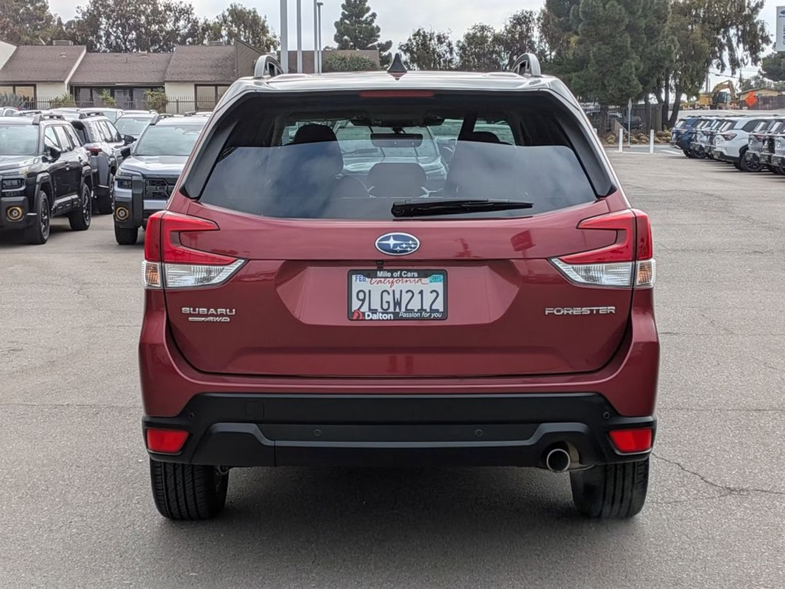
On the lot
Standard and Certified Pre-Owned units park together here.
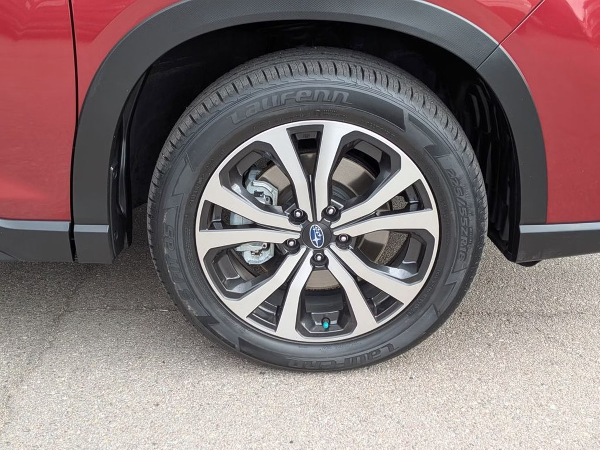
On the lot
Standard and Certified Pre-Owned units park together here.
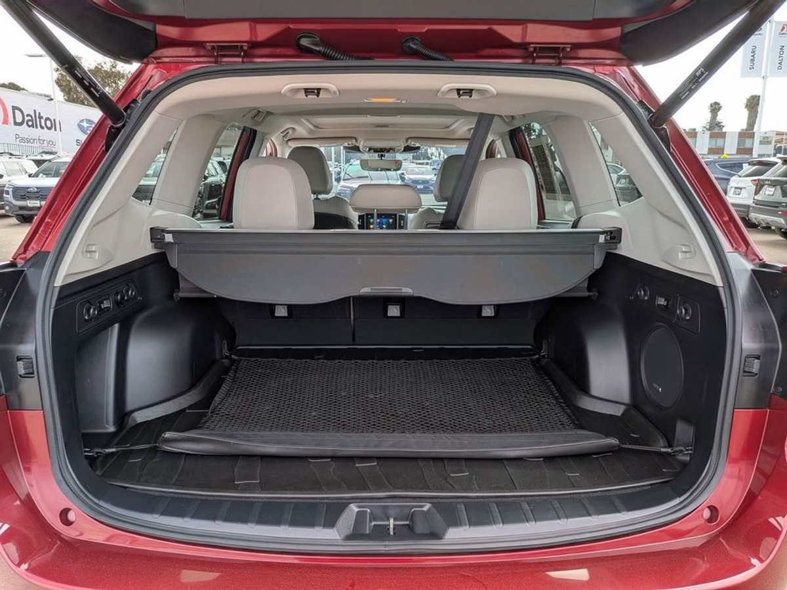
On the lot
Standard and Certified Pre-Owned units park together here.
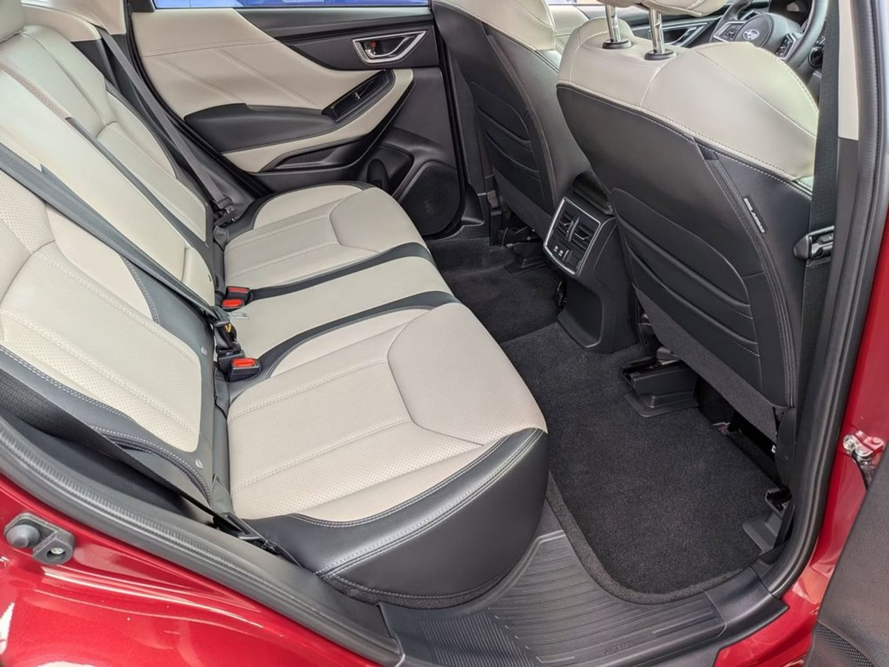
On the lot
Standard and Certified Pre-Owned units park together here.
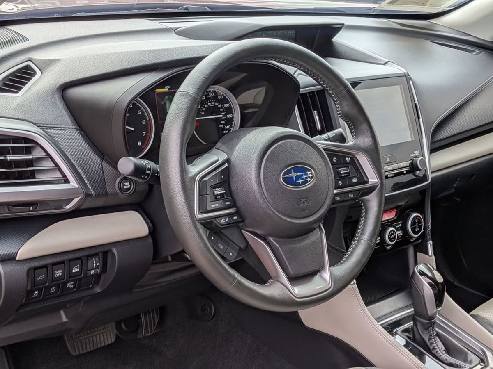
On the lot
Standard and Certified Pre-Owned units park together here.
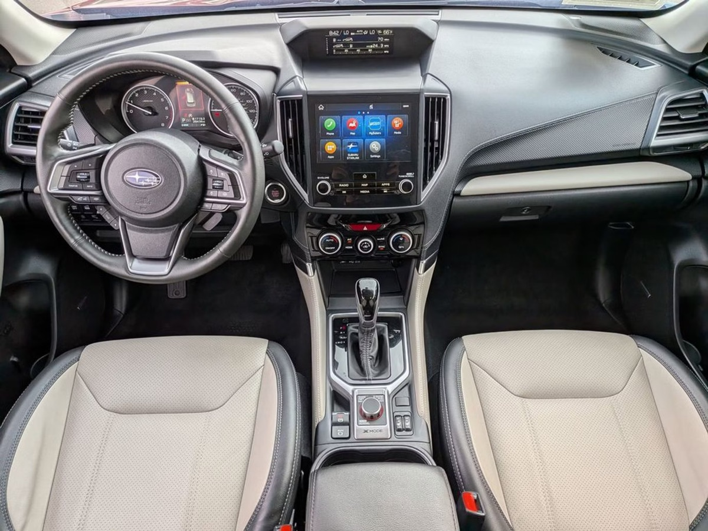
On the lot
Standard and Certified Pre-Owned units park together here.
01 / 07
Actual photos of used Subarus at Dalton Subaru National City, 2829 National City Blvd. Specific trim, colour, and equipment vary by unit — see the live used inventory for what is on the lot today.
02The CPO program
What "Certified Pre-Owned" means on a Subaru.
The term "CPO" gets thrown around loosely in used-car ads, so here's what applies specifically to the cars on our lot. Subaru of America's program covers vehicles within manufacturer-set model-year and mileage limits, and each one has to pass Subaru's 152-point inspection before it can wear the CPO badge.
The headline benefit is the warranty: Subaru CPO adds a 7-year/100,000-mile powertrain warranty measured from the vehicle's original in-service date, on top of any remaining factory bumper-to-bumper coverage. You can confirm the current program terms directly on Subaru of America's own site, subaru.com. We'd rather you check the manufacturer's published terms than take our word for it.
152-pt
Subaru inspection before the CPO badge
7 yr
Powertrain warranty from in-service date
100k mi
Cap on the powertrain warranty term
SOA
Backed by Subaru of America · subaru.com
Where the warranty clock starts
Most second-hand buyers miss this: that powertrain clock starts at the original in-service date, not the date you buy. So a CPO Outback that was first sold three years ago has already used three years of that 7-year window. It's still real coverage, but if you're buying a CPO car near the older edge of the eligibility range, do the subtraction before you assume you're getting the full seven years. Our finance desk will print the original in-service date for any CPO unit so you can see exactly where the clock stands.
What sends a car to the used line instead
When we take a Subaru in on trade, our techs put it on the rack and inspect the underbody, brakes, tires, and the boxer engine's gaskets and timing components before we decide whether it's headed for the CPO line or the standard used line. We've declined to certify cars over things a quick walkaround would never catch: a weeping head gasket, brake rotors past minimum thickness, tires that wouldn't survive a San Diego summer of freeway miles. Those cars still sell, but they sell as honest used units at honest used prices, not as CPO.
03Why buy here
Why shop second-hand Subarus here.
San Diego County has no shortage of pre-owned Subaru listings. What makes the Dalton Subaru lot worth the drive to National City comes down to how every car gets onto it.
The same team you already trusted
Dalton Subaru National City sits in the same spot on the National City Mile of Cars that local drivers knew for years as Frank Subaru. The store is now part of the Dalton Corporation, but the crew on the floor didn't change. It's the same team that has served National City and Chula Vista shoppers, now under the Dalton name. On a second-hand purchase, who you buy from matters as much as what you buy, and this is a team that'll still be here for your first service appointment.
General Manager Antonio Luna and Service & Parts Director Rick Griffin run the same shop that will be changing your oil and rotating your tires two years from now. That continuity creates the advantage of buying second-hand from a franchised store, instead of a one-and-done lot.
A track record you can check first
Dalton Subaru National City holds a 4.7-star Google rating across 4,448 reviews. On a used buy, seller reputation is the whole ballgame, so read the reviews, then come look at the inventory in person. We won't paraphrase what customers say; go read the reviews yourself and form your own view. The rating is public and current, and we can't edit it.
One visit, not a weekend
Because every second-hand Subaru, used and CPO, is parked at 2829 National City Blvd, you're not chasing listings across the county. You compare them in front of you. That turns a multi-stop search into one focused afternoon.
National City Boulevard is the heart of the Mile of Cars, minutes off I-5, so getting here from Chula Vista, downtown San Diego, or the South Bay is a short drive rather than a cross-county expedition.
Shot on our own lot on the Mile of Cars. What is standing here changes weekly, so call before you drive over if you are chasing a specific model.
04The lineup, used
The second-hand lineup.
Subaru's lineup holds its value and its all-wheel-drive reputation, which is exactly why these models move through the second-hand lot. Standard symmetrical all-wheel drive comes on nearly every Subaru, part of why these cars resell well in a region where buyers want traction for desert runs to Anza-Borrego and mountain trips up to Julian.
Wagon-SUVMost repeat buys
Outback
The road-trip and trailhead default. Recent Outbacks return EPA-estimated fuel economy in the low-to-mid 30s mpg highway on the base 2.5-liter, paired with real cargo room and roof rails. On the used line, it's the model we see come back for second and third purchases more than any other.
Compact SUVEasy to drive
Forester
Tall, boxy, easy to see out of. A perennial pick for first-time SUV buyers; its upright glass and high seating position make it one of the easier compact SUVs to park in National City or a Chula Vista garage. Check the specific year's crash-test marks at IIHS and NHTSA.
SubcompactBudget-first
Crosstrek
Right-sized for the commute. Compact and easy on fuel. It's the Subaru we most often steer budget-minded first-time buyers toward. The smaller footprint keeps both purchase price and fuel bill down without giving up all-wheel drive.
Sedan / HatchEntry price
Impreza
The budget door into Subaru ownership. Available as a sedan or hatch. If your priority is the lowest entry price into a Subaru with AWD, this is usually where a used search starts.
3-row SUVFamily hauler
Ascent
Three rows when that's the assignment. The one to look at if a car seat in the third row is non-negotiable; just know they move quickly second-hand because three-row Subarus are in short supply on any used lot.
Inventory turns over constantly, so the smart first move is to check what's on the ground at subarudalton.com before you head over.
On our lot now
A used Crosstrek at Dalton Subaru, photographed on the National City Mile of Cars
Front end of a used Crosstrek on the National City lot.
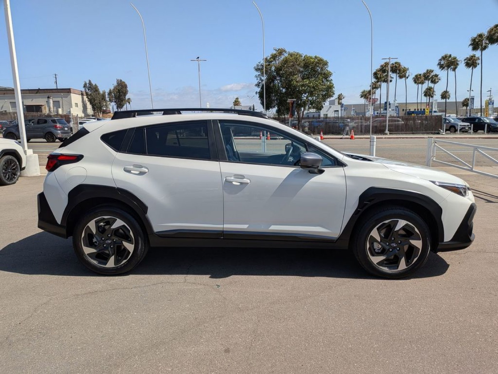
Full profile
Side profile, alloy wheels and roof rails.
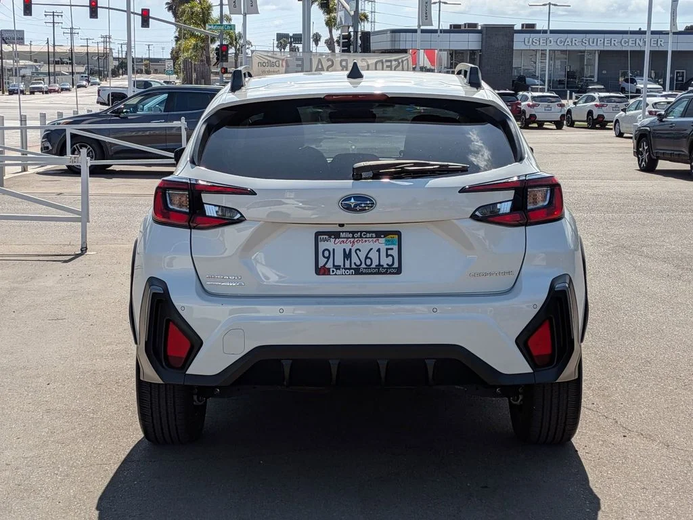
From the rear
Crosstrek and AWD badging, window sticker on the glass.
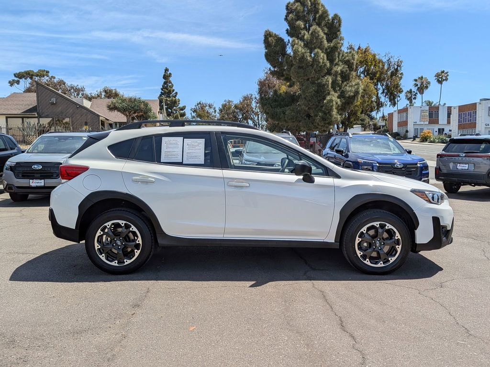
On the lot
A used Crosstrek in the pre-owned rows.
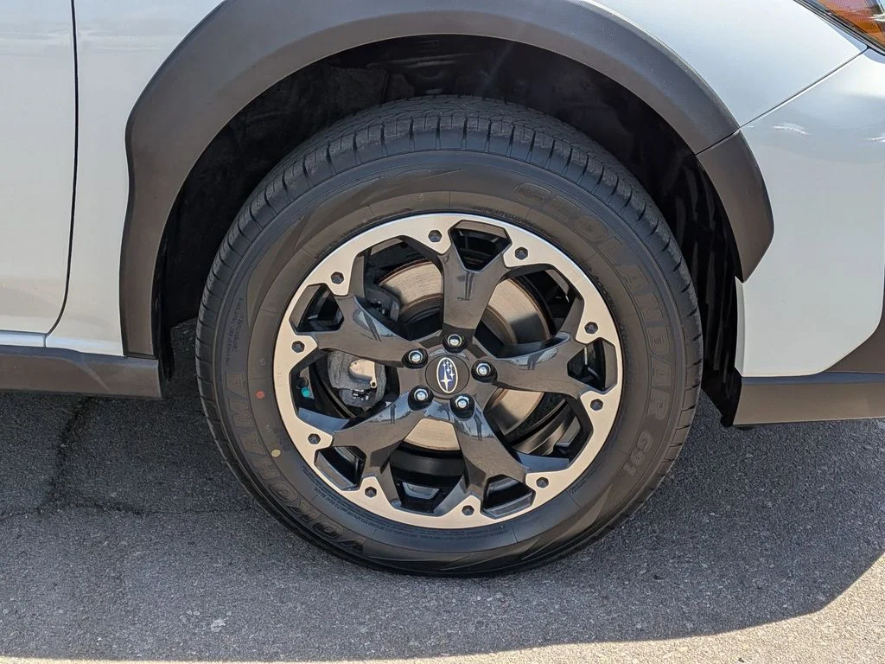
Wheels and tyres
Tread and alloys, checked before it lists.
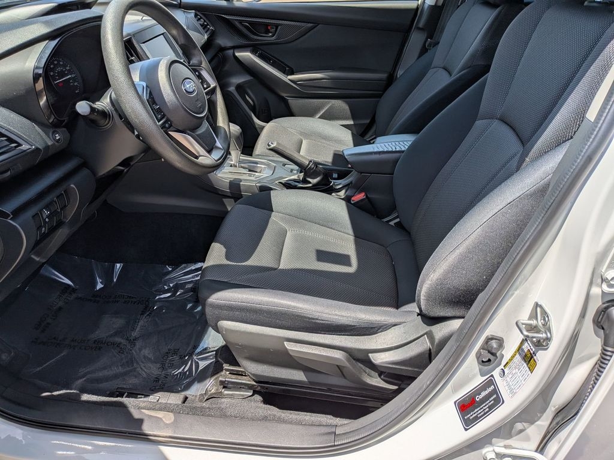
Inside
Cabin and seats, protective covers still down.
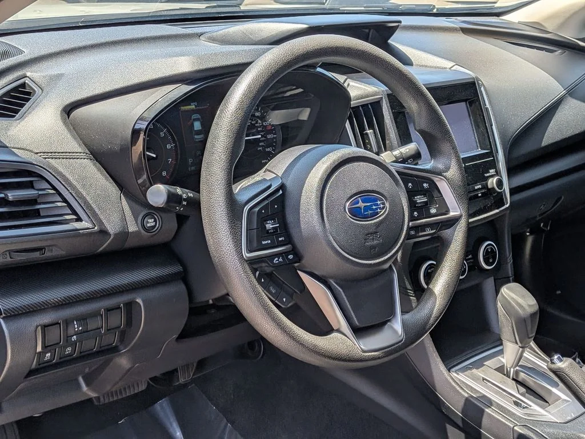
At the wheel
Steering wheel, cluster and controls.
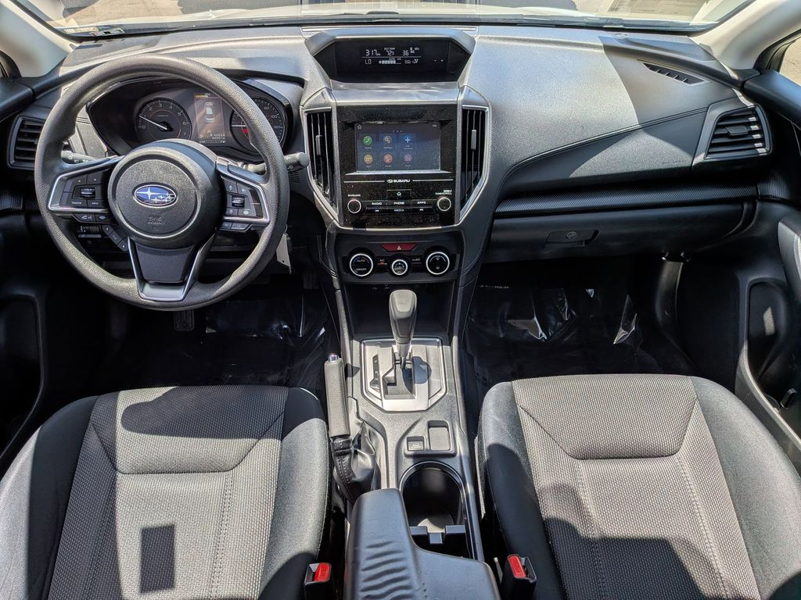
Dashboard
Screen, climate and shifter in one view.
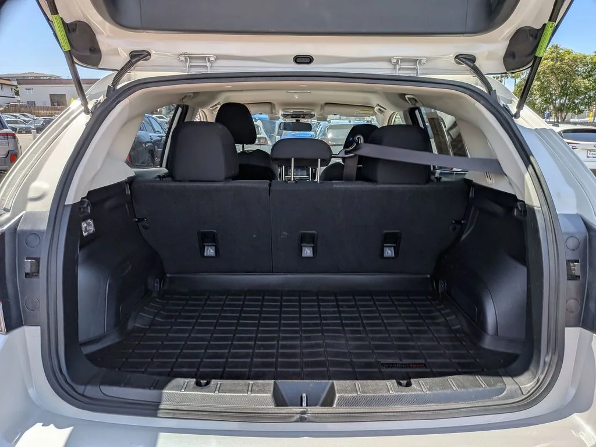
Cargo
Seats up, the boot you actually get.
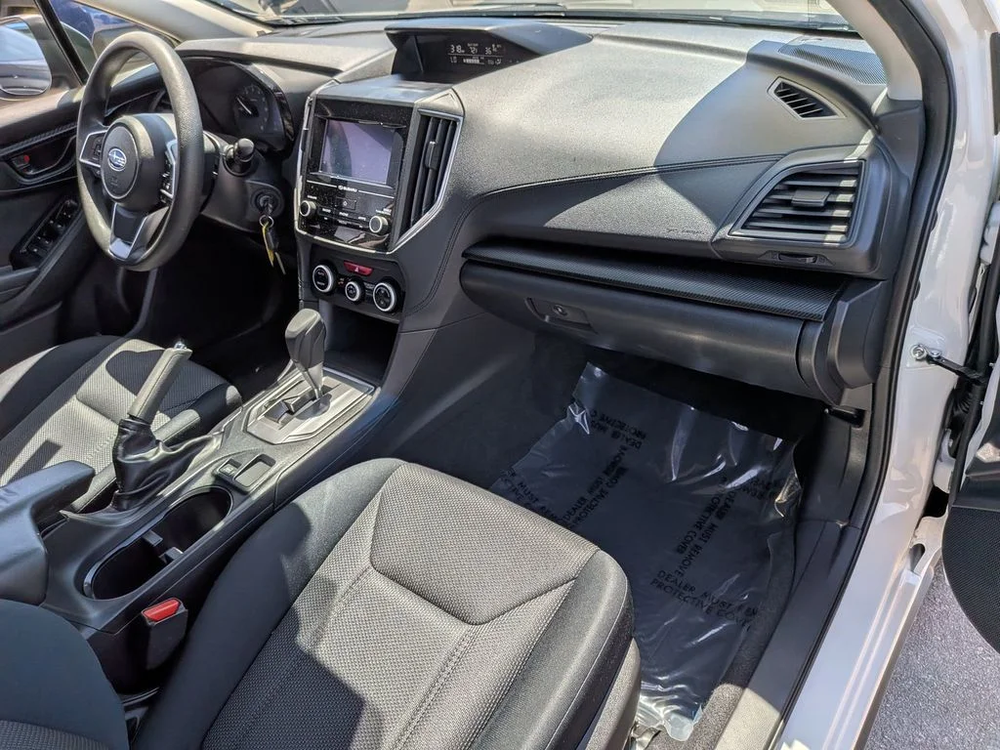
Interior
See the cabin before you book the drive.
01 / 10
Actual photos of used Subarus at Dalton Subaru National City, 2829 National City Blvd. Whether a given car is standard used or Certified Pre-Owned is on its window sticker and on the live used inventory listing.
05In the service drive
What we look for.
San Diego is a coastal market, which changes what matters on a used inspection. We aren't fighting Midwest road salt and rusted-out subframes here. The bigger second-hand concerns in Southern California are different, and they're the systems our techs check first on any trade-in:
InteriorSun damage
Sun-baked interiors
The coastal-climate tell. Interior surfaces go brittle and crack after years of Southern California sun. We check them before any car goes on the line.
SealsInspected
Brittle weatherstripping
Heat-hardened seals. Door and window weatherstripping that's dried out in the heat lets in noise and water; we look at it on every trade-in.
A/CHard life
A/C systems
Summer-traffic wear. Air-conditioning that has lived a hard life in summer traffic gets checked, because it's a system that bites Southern California owners.
CoolingFreeway miles
Cooling systems
The hot-freeway risk. Cooling systems on cars that have done long, hot freeway commutes are exactly what fails on a hot day on the 805, so they come apart first.
We pulled the service history on a 2019 Forester trade-in and found two skipped coolant services. The car ran fine, but we flushed the system and replaced the thermostat before it went on the line. That's the work that never shows up in a listing photo.
That's why we'd tell you to ask any second-hand seller, here or anywhere, for the maintenance records before you sign. If a used Subaru you're looking at elsewhere doesn't come with service history and the seller can't explain the gaps, that's a reason to slow down, not a reason to panic, but a reason to budget for an immediate fluid-and-belts service. We'll happily run a pre-purchase inspection on a car you're considering, even one you didn't find on our lot. Reach the team through the official Dalton Subaru Contact Portal to set it up.
06Used vs. CPO
Used vs. Certified Pre-Owned: which one is right for you.
There's no universally correct answer. It depends on how you plan to keep the car. This is the side-by-side we walk buyers through on the floor.
You're buying near the bottom of the price range, you plan to keep the car a long time, and you're comfortable budgeting for maintenance yourself. A clean, well-documented used Subaru with full service records can be the smarter buy than a CPO car whose warranty is already half spent.
Lean CPO if
You want the security of factory-backed powertrain coverage, you're financing and want predictable costs, or this is your first time owning a higher-mileage vehicle and the peace of mind is worth the premium.
CPO is not automatically the better deal, and we won't pretend it is. Bring us both options and we'll show you the actual numbers side by side.
Our advice: on a newer car with most of its original warranty intact, CPO adds real value. On an older eligible car where most of the 7-year powertrain window has already elapsed, a well-maintained standard used unit at a lower price can come out ahead.
07Buying at Dalton
How to buy a second-hand Subaru, step by step.
We are at 2829 National City Blvd, National City, CA 91950, on the National City Mile of Cars, serving National City, Chula Vista, and San Diego County. Buying here is meant to be short and clear. The whole thing runs about like this.
Browse online first. Check current used and CPO inventory at subarudalton.com so you walk in knowing what's in stock.
Set your lane. Decide whether you're prioritizing the lowest entry price (used) or factory-backed warranty coverage (CPO).
Pull the history. Ask for the vehicle history report and the maintenance records on every car on your shortlist. We keep them on hand.
Drive your shortlist. Visit 2829 National City Blvd and put your top picks back to back in a single trip.
Confirm the details. Ask the team to walk you through each vehicle's history and exactly what warranty coverage carries over, and on CPO units, the original in-service date so you know where the warranty clock stands.
Ask for a pre-purchase inspection on a Subaru you're considering, even one you found elsewhere
Sales is open Monday through Saturday, 8:30 AM to 8:00 PM, and Sunday from 10:00 AM to 6:00 PM, so a second-hand Subaru hunt fits a work week or a weekend just as easily. Our address is 2829 National City Blvd, National City, CA 91950, and you can reach the team through the official Dalton Subaru Contact Portal.
Dalton Subaru National City
Who you're buying the used car from.
The same store local owners knew as Frank Subaru, now operating as Dalton Subaru National City under the Dalton Corporation: same people, same service drive, same team. We serve National City, Chula Vista, and the wider San Diego County area.
4.7 ★
Google rating across 4,448 reviews
152-pt
Subaru inspection on every CPO unit
Love
Subaru Love Promise community commitment
5 models
Outback, Forester, Crosstrek, Impreza, Ascent
Service drive
Our Service and Parts team, led by Rick Griffin, puts every trade-in on the rack and inspects the underbody, brakes, tires, and the boxer engine's gaskets and timing components before deciding whether it heads for the CPO line or the standard used line.
The same team services the car long after you drive it off the Mile of Cars. That continuity is the point.
For existing owners, nothing about who works on your car changed.
Second-hand at our store
Two ways to buy on one lot: used Subarus at the lowest entry point, and Subaru Certified Pre-Owned models that pass a 152-point inspection and meet Subaru of America's age and mileage standards.
CPO adds a 7-year/100,000-mile powertrain warranty measured from the original in-service date, on top of any remaining factory coverage.
Models that move through second-hand: Outback, Forester, Crosstrek, Impreza, and Ascent.
Frequently asked questions about buying a Subaru second hand.
Where can I find a Subaru for sale second hand in National City?
At Dalton Subaru National City, 2829 National City Blvd, on the Mile of Cars. The lot carries both used and Subaru Certified Pre-Owned models.
Browse current inventory at subarudalton.com, then reach the team through the official Dalton Subaru Contact Portal.
What's the difference between a used and a Certified Pre-Owned Subaru?
A used Subaru is any pre-owned model on the lot. A Subaru CPO vehicle has passed Subaru's 152-point inspection, meets the brand's age and mileage standards, and includes a manufacturer-backed 7-year/100,000-mile powertrain warranty measured from the original in-service date.
CPO costs a bit more and adds factory protection. Current program terms are published on subaru.com.
Does the CPO warranty start when I buy the car?
No, and this trips up a lot of buyers. The 7-year/100,000-mile powertrain coverage is measured from the vehicle's original in-service date, not your purchase date. On an older CPO car, part of that window may already be used.
We'll print the original in-service date for any CPO unit so you can see exactly where the clock stands.
Should I worry about rust on a used Subaru in San Diego?
Far less than a buyer in a salt-belt state would. The bigger second-hand concerns in our coastal, dry climate are sun-damaged interiors and weatherstripping, A/C wear, and cooling systems on high-freeway-mileage cars.
Our techs inspect those systems first on every trade-in, and we'd tell you to ask for maintenance records anywhere you shop.
Can you inspect a used Subaru I'm considering from another seller?
Yes. Our service team will run a pre-purchase inspection on a Subaru you're looking at elsewhere. It's the single best money you can spend before buying any second-hand car.
How do I check a specific model year's safety ratings and fuel economy?
Crash-test results are published by the IIHS and NHTSA, and EPA fuel-economy estimates are at fueleconomy.gov.
Ratings and figures change by model year, so check the exact year you're considering rather than assuming the lineup average.
Is Dalton Subaru National City a legit place to buy second hand?
Yes. It's an established Subaru dealership at 2829 National City Blvd holding a 4.7-star Google rating across 4,448 reviews, the same team local drivers knew as Frank Subaru, now part of the Dalton Corporation, serving National City, Chula Vista, and San Diego County.
Can I compare several second-hand Subarus in one visit?
Yes. Every used and CPO Subaru is at the same location, so you can drive your shortlist back to back in a single trip.
What are your sales hours?
Sales is open Monday–Saturday 8:30 AM–8:00 PM and Sunday 10:00 AM–6:00 PM.
·Related reading
More from Dalton Subaru National City
Still narrowing the shortlist? These guides help you compare trims, models, and what the used lane looks like here.
Last reviewed by the Dalton Subaru National City Pre-Owned Team · June 19, 2026
Editorial byline
Reviewed and posted by the Dalton Subaru National City Pre-Owned Team
Pre-owned inspections led by Service & Parts Director Rick Griffin; used sales overseen by Used Car Manager Juan Reynoso.
Dalton Subaru National City · 2829 National City Blvd, National City, CA 91950
Subaru Certified Pre-Owned program terms (the 152-point inspection, age and mileage eligibility, and the 7-year/100,000-mile powertrain warranty measured from the original in-service date) are published by Subaru of America at subaru.com and should be confirmed there. Fuel-economy figures are EPA estimates from fueleconomy.gov; safety ratings and open recalls by VIN should be verified at nhtsa.gov and iihs.org. Used and CPO inventory, pricing, and individual vehicle history change constantly and should be re-verified before any deal is signed. For a specific second-hand Subaru, reach Sales through the official Dalton Subaru Contact Portal.
If a question about buying a Subaru second hand at Dalton Subaru National City is not answered here, reach a sales advisor through the official Dalton Subaru Contact Portal, or browse current used and CPO inventory at subarudalton.com.
Browse current second-hand inventory, used and CPO, at subarudalton.com, then visit Dalton Subaru National City at 2829 National City Blvd to drive your top picks. We'll show you the real numbers, not just the sticker.
Inventory & availability. The used and Subaru Certified Pre-Owned vehicles described here (Outback, Forester, Crosstrek, Impreza, and Ascent) reflect what typically cycles through our lot and shift week to week as vehicles are sold and delivered. This page is not a guarantee that any specific model, trim, year, or color is currently on the lot. Confirm live availability at subarudalton.com used inventory before visiting.
Pricing & offers. We do not publish payment, APR, or financing figures on this page because those terms change. A specific vehicle's price is its window sticker plus the offer running that day. All financing is subject to credit approval. For independent value research, see kbb.com and edmunds.com.
Certified Pre-Owned program. The 152-point inspection and 7-year/100,000-mile limited powertrain warranty apply to Subaru Certified Pre-Owned vehicles only, per Subaru of America program terms, and eligibility is limited by model year and mileage. Powertrain coverage is measured from the vehicle's original in-service date, not your purchase date, so remaining coverage varies by vehicle. Standard used vehicles carry remaining factory coverage, if any, or are sold as-is. Confirm current terms at subaru.com and ask us to print the original in-service date on any CPO unit.
Specifications & fuel economy. Drivetrain and fuel-economy references are approximate and vary by model year, trim, engine, and configuration. Standard Symmetrical All-Wheel Drive is fitted to nearly all Subaru models, though not every one; the BRZ is rear-wheel drive. Confirm exact figures on the specific vehicle's window sticker, at subaru.com, or at fueleconomy.gov.
Safety & recalls. Crash-test results are published per model year by the Insurance Institute for Highway Safety (iihs.org) and the National Highway Traffic Safety Administration (nhtsa.gov) and vary year to year; check the specific year before you buy. Open recalls for any VIN can be checked free at nhtsa.gov.
Dealership history. References to the store's prior operation as Frank Subaru at this location describe ownership history; Dalton Subaru National City is now part of the Dalton Corporation.
Rating & reviews. The 4.7-star Google rating across 4,448 reviews reflects Dalton Subaru National City's Google Business Profile as of publication. Review counts are pulled live and change over time; confirm the current figure on the live Google profile.
Hours. Sales hours (Monday–Saturday 8:30 AM–8:00 PM, Sunday 10:00 AM–6:00 PM) are current at publication and subject to change on holidays. Confirm hours before visiting.
Published 2026-08-01 by Dalton Subaru National City, 2829 National City Blvd, National City, CA 91950.